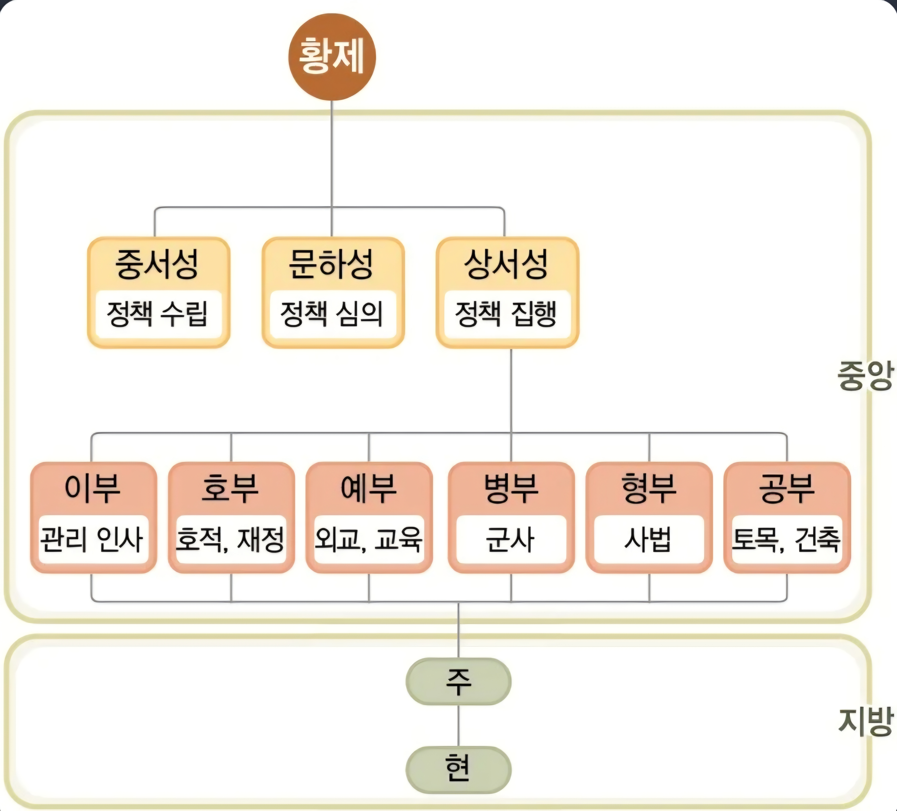
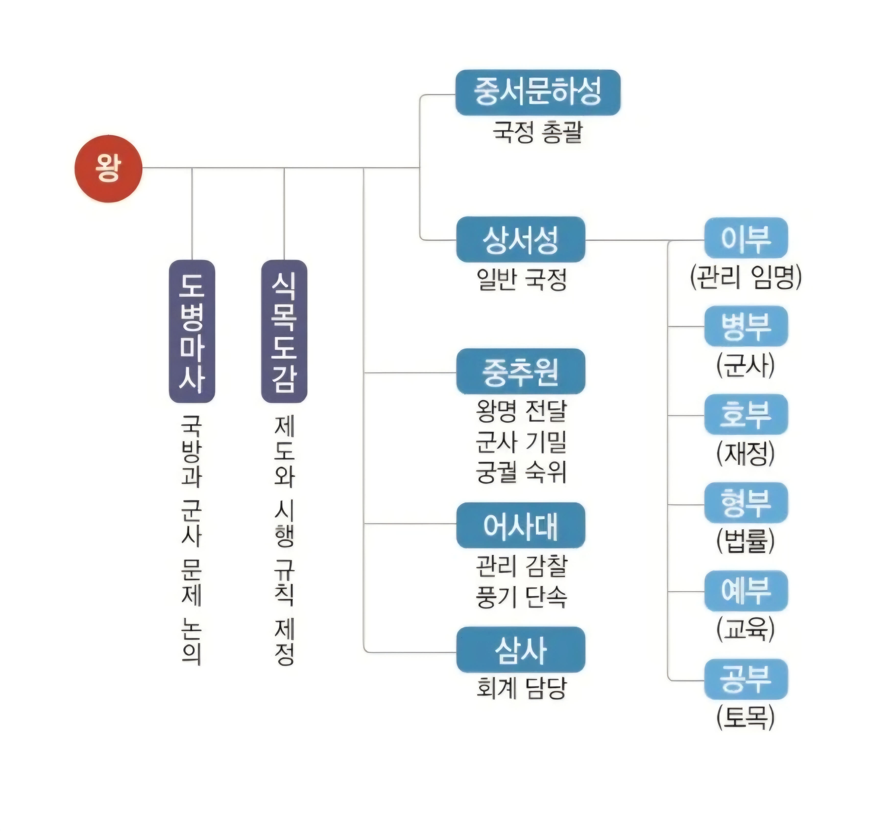

HISTORY DETECTIVE GAME
고려 통치 미스터리
K-史의 오류를 찾아라
역사 학습 AI K-史의 보고서에서
수상한 판단이 발견되었습니다.
여러분은 고려사 특별수사대입니다. 증거를 분석하고 오류를 찾아 세 사건을 해결하세요.
여러분은 고려사 특별수사대입니다. 증거를 분석하고 오류를 찾아 세 사건을 해결하세요.
MISSION SELECT
사건 파일
🔒 이전 사건을 먼저 해결하세요.
CASE 01 · MISSION START
중국 제도를 그대로 따라 했다고?
REVIEW MODE · 복습 모드
🤖 K-史 분석 보고서
고려에는 당과 마찬가지로 6부가 설치되어 있었다.
따라서 고려는 당의 중앙 정치 제도를 거의 그대로 받아들여 운영했다고 볼 수 있다.
⚠ 조직도를 비교하여 K-史의 판단을 검증하세요.
CASE 01 · EVIDENCE 01
당과 고려의 조직 비교
REVIEW MODE · 복습 모드
EVIDENCE A

당의 중앙 정치 조직도
🔍 터치하여 확대
EVIDENCE B

고려의 중앙 정치 조직도
🔍 터치하여 확대
두 조직도를 비교한 판단으로 가장 적절한 것은?
⚠ 공통점과 차이점을 함께 살펴보세요.
✅ 분석 성공
당은 3성 6부, 고려는 중서문하성과 상서성을 중심으로 2성 6부를 운영했습니다.
당은 3성 6부, 고려는 중서문하성과 상서성을 중심으로 2성 6부를 운영했습니다.
🔓 단서 확보
당의 3성 6부와 관련
→ 고려에서는 2성 6부로 운영
CASE 01 · EVIDENCE 02
중국의 영향인가, 고려의 독자성인가?
REVIEW MODE · 복습 모드
📄 추가 조사 기록
송의 제도와 관련
중추원 · 삼사
고려의 독자적인 정치 기구
도병마사 · 식목도감
중추원
군사 기밀과 왕명 출납
군사 기밀과 왕명 출납
삼사
화폐와 곡식의 출납 및 회계
화폐와 곡식의 출납 및 회계
도병마사
국방·군사 등 중요한 일 논의
국방·군사 등 중요한 일 논의
식목도감
법률과 제도 등을 논의
법률과 제도 등을 논의
증거를 종합한 설명으로 가장 적절한 것은?
⚠ 중국의 영향과 고려의 독자성을 함께 고려하세요.
✅ 분석 성공
🔓 핵심 단서 확보
송의 영향 → 중추원 · 삼사
고려의 독자성 → 도병마사 · 식목도감
고려의 독자성 → 도병마사 · 식목도감
CASE 01 · FINAL ANALYSIS
최종 판정
REVIEW MODE · 복습 모드
🤖 K-史
고려의 중앙 정치 제도는 당과 송의 제도를 단순히 결합한 것으로 보면 되겠군요.
고려의 중앙 정치 제도를 가장 적절하게 설명한 것은?
⚠ 지금까지 확보한 단서를 다시 확인하세요.
✅ 최종 추론 성공
🏛️
MISSION COMPLETE
중앙 정치 수사 완료
CASE 01 SOLVED
수사 결론
당의 3성 6부와 관련 → 고려에서는 2성 6부로 운영
송의 제도와 관련 → 중추원 · 삼사
고려의 독자성 → 도병마사 · 식목도감
당의 3성 6부와 관련 → 고려에서는 2성 6부로 운영
송의 제도와 관련 → 중추원 · 삼사
고려의 독자성 → 도병마사 · 식목도감
🔓 NEXT STAGE
CASE 02 · 사라진 지방관
SECRET FILE · BONUS
왕에게도 “안 됩니다”라고?
REVIEW MODE · 복습 모드
중서문하성의 낭사
정치의 잘못을 비판하고 왕에게 의견을 제시하였다.
정치의 잘못을 비판하고 왕에게 의견을 제시하였다.
어사대의 관리
관리의 잘못을 감찰하였다.
관리의 잘못을 감찰하였다.
두 집단을 함께 묶어 부른 명칭은?
⚠ 두 집단의 역할을 다시 살펴보세요.
✅ 대간입니다.
🎁 비밀 단서
대간 → 관리 감찰 + 정치 비판
🎁
SECRET MISSION COMPLETE
대간
중서문하성의 낭사 + 어사대의 관리
↓
대간
↓
관리 감찰 + 정치 비판
↓
정치 권력 견제
↓
대간
↓
관리 감찰 + 정치 비판
↓
정치 권력 견제
CASE 02 · FIELD INVESTIGATION
사라진 지방관
REVIEW MODE · 복습 모드
🤖 K-史
고려의 모든 군현에는 중앙에서 파견된 지방관이 있었을 것이다.
⚠ 지방 조사 기록을 통해 판단을 검증하세요.
CASE 02 · FIELD LOG
지방을 돌아본 관리의 기록
REVIEW MODE · 복습 모드
○○현에서는 중앙에서 파견된 지방관이
행정을 맡고 있었고,
향리가 세금 징수와 문서 작성 등의 실무를 담당하였다.
하지만 △△현에는 지방관이 없었다.
하지만 △△현에는 지방관이 없었다.
“저희 향리가 행정 실무를 맡고 있습니다.
중요한 일은 지방관이 있는 인근 군현을 통해 처리합니다.”
※ 고려의 지방 행정 제도를 바탕으로 재구성한 학습 자료
○○현과 △△현을 바르게 판단한 것은?
⚠ 지방관의 파견 여부를 확인하세요.
✅ 주현에는 지방관이 파견되고,
속현에는 파견되지 않았습니다.
🔓 단서 확보
주현 → 지방관 파견
속현 → 지방관 미파견
속현 → 지방관 미파견
CASE 02 · FIELD ANALYSIS
지방관이 없어도 행정이 가능했던 이유
REVIEW MODE · 복습 모드
△△현에서 지방 행정이 이루어질 수 있었던 이유는?
⚠ 향리와 속현의 관계를 다시 생각해 보세요.
✅ 향리가 지방 행정 실무를 담당했습니다.
🔓 단서 확보
향리 → 지방 행정 실무 담당
CASE 02 · FINAL FIELD LOG
일반 군현과 다른 지역
REVIEW MODE · 복습 모드
조사관은 일반 군현과 달리
농업이나 특정 물품 생산을 담당하고,
일반 군현 주민보다 더 많은 부담을 지는 지역을 발견하였다.
이 지역을 가장 적절하게 설명한 것은?
⚠ 일반 군현과 구별되었다는 점에 주목하세요.
✅ 향·부곡·소에 해당합니다.
🔓 마지막 단서
향·부곡·소 → 특수 행정 구역
🗺️
MISSION COMPLETE
지방 행정 수사 완료
CASE 02 SOLVED
수사 결론
5도 → 일반 행정 구역
양계 → 군사적 성격이 강한 북방 국경 지역
주현 → 지방관 파견
속현 → 지방관 미파견
향리 → 지방 행정 실무
향·부곡·소 → 특수 행정 구역
5도 → 일반 행정 구역
양계 → 군사적 성격이 강한 북방 국경 지역
주현 → 지방관 파견
속현 → 지방관 미파견
향리 → 지방 행정 실무
향·부곡·소 → 특수 행정 구역
CASE 03 · PERSONNEL FILE
수상한 관리 임용 기록
REVIEW MODE · 복습 모드
🤖 K-史
고려에서 관리가 되려면 시험에 합격하여 능력을 인정받는 것이 가장 중요한 조건이었다.
CASE 03 · PERSONNEL FILE 01
세 관리의 임용 기록
REVIEW MODE · 복습 모드
관리 A
시험 응시
↓
합격
↓
관직 진출
↓
합격
↓
관직 진출
관리 B
부친이 일정한 지위 이상의 관리
↓
선발 시험 기록 없음
↓
관직 진출
↓
선발 시험 기록 없음
↓
관직 진출
관리 C
부친이 높은 관직을 지낸 관리
↓
시험 응시
↓
합격
↓
시험 응시
↓
합격
세 사람의 관리 진출 방법을 바르게 판단한 것은?
⚠ 시험 응시 여부를 확인하세요.
✅ 출신 가문만으로는 과거와 음서를 구분할 수 없습니다.
🔓 단서 확보
과거 → 시험을 통한 선발
음서 → 일정한 자격을 갖춘 관리 자손의 관직 진출
음서 → 일정한 자격을 갖춘 관리 자손의 관직 진출
CASE 03 · PERSONNEL ANALYSIS
능력인가, 가문인가?
REVIEW MODE · 복습 모드
과거와 음서를 함께 고려한 판단으로 가장 적절한 것은?
⚠ 과거와 음서의 선발 방식을 함께 비교하세요.
✅ 능력과 가문의 영향이 함께 나타났습니다.
CASE 03 · FINAL ERROR
무과와 승과
REVIEW MODE · 복습 모드
🤖 K-史 최종 보고서
고려에서는 무과와 승과가 실시되지 않았다.
이를 수정한 내용으로 가장 적절한 것은?
⚠ 승과와 무과의 실제 운영 여부를 확인하세요.
✅ 승과는 실시되었고,
무과는 시행된 적이 있으나 정례화되지 못했습니다.
🔓 최종 단서
승과 → 실시
무과 → 시행된 적 있으나 정례화되지 못함
무과 → 시행된 적 있으나 정례화되지 못함
📜
MISSION COMPLETE
관리 등용 수사 완료
CASE 03 SOLVED
수사 결론
과거 → 시험을 통한 관리 선발
음서 → 일정한 자격을 갖춘 관리 자손의 관직 진출
승과 → 실시
무과 → 시행된 적이 있으나 정례화되지 못함
과거 → 시험을 통한 관리 선발
음서 → 일정한 자격을 갖춘 관리 자손의 관직 진출
승과 → 실시
무과 → 시행된 적이 있으나 정례화되지 못함
🏆
ALL CASES SOLVED
고려사 특별수사대
INVESTIGATION COMPLETE
FINAL MISSION
최종 수사 보고서
CASE 01 ✅
중국 제도의 영향
+
고려의 독자성
CASE 02 ✅
주현 · 속현
향리
향 · 부곡 · 소
CASE 03 ✅
과거 · 음서
승과 · 무과
가장 기억에 남는 고려 통치 제도의 특징 하나와
그 증거를 작성하세요.
고려사 특별수사대
최종 수사 보고서
CASE 01 ✅
CASE 02 ✅
CASE 03 ✅
나의 최종 판단
판단의 증거